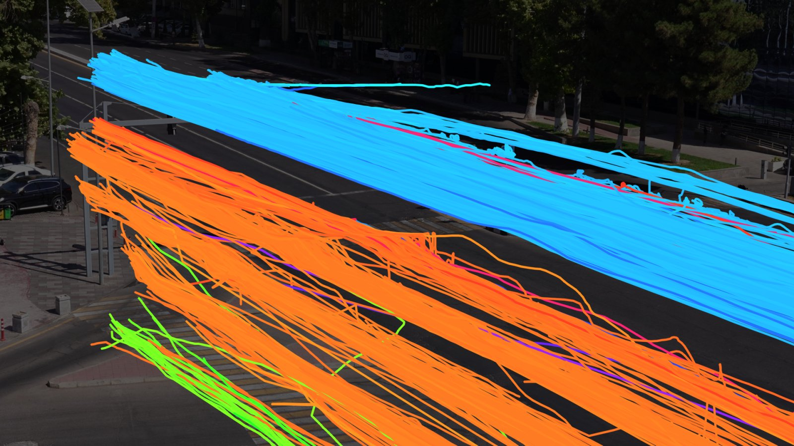
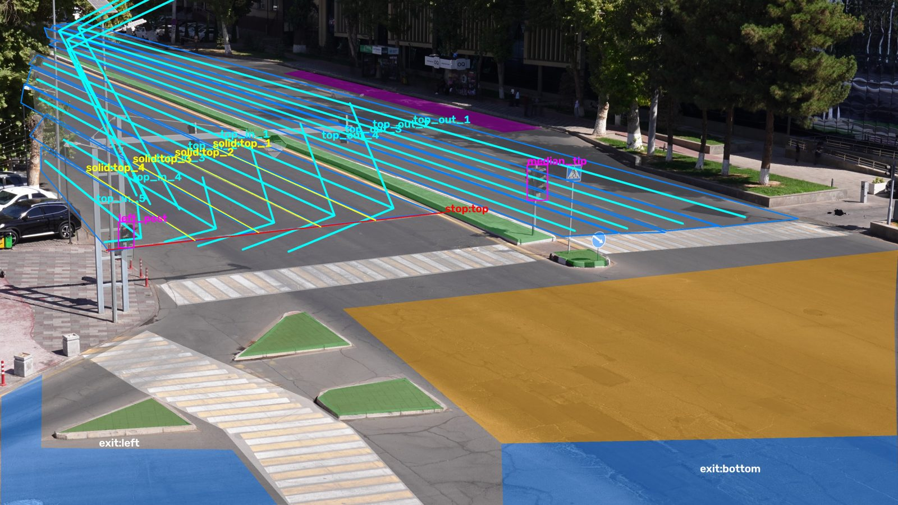
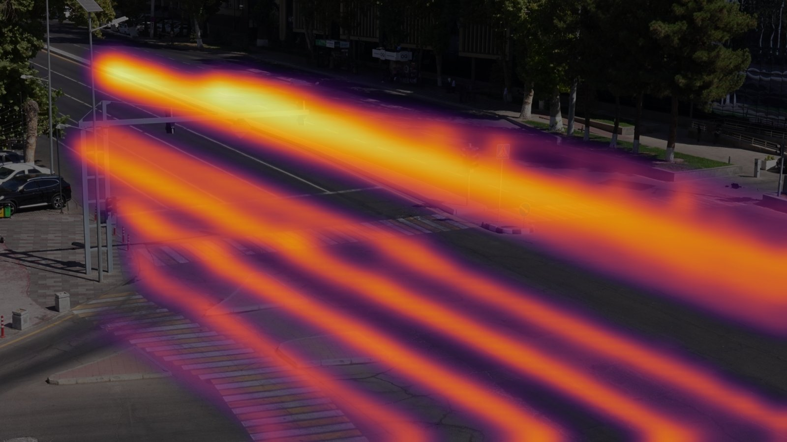
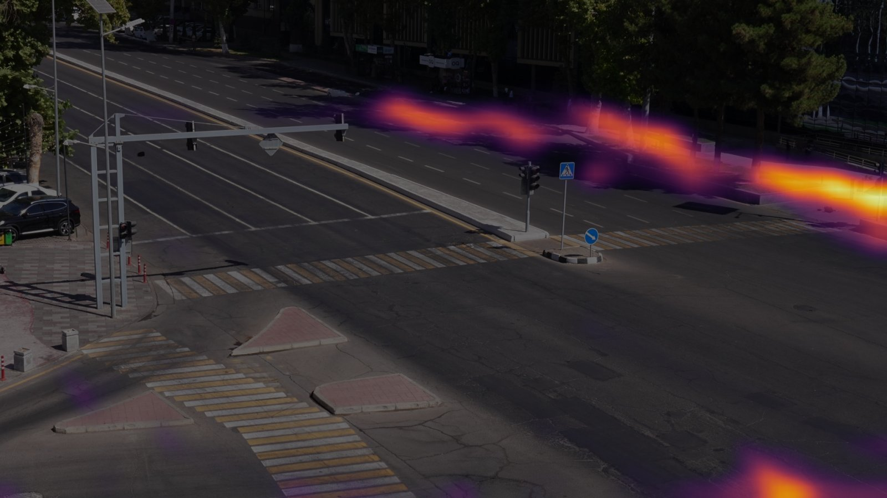
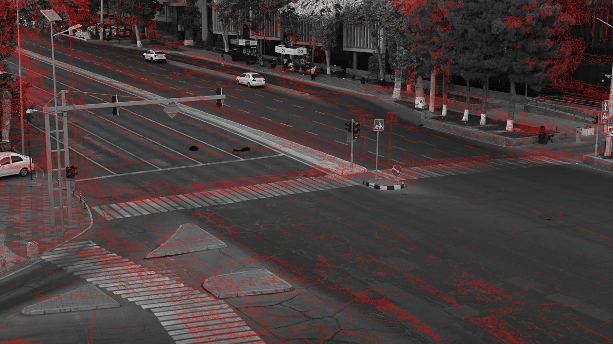
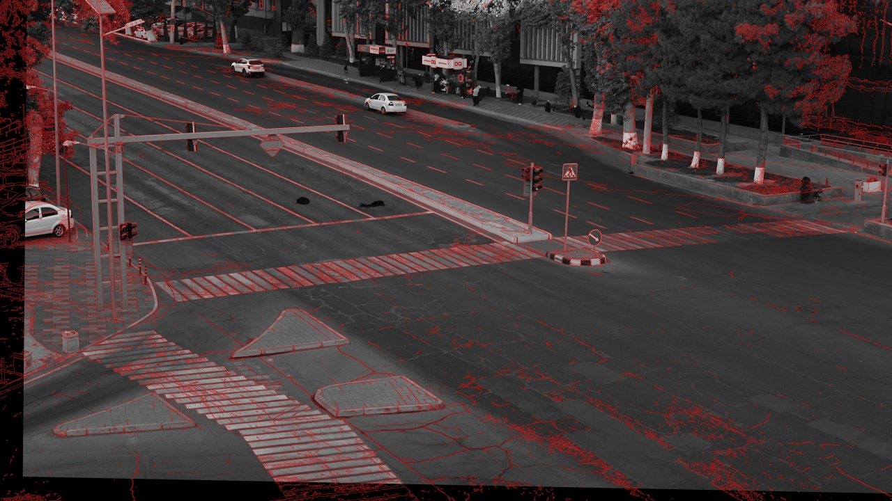

WIUT Hackathon 2026 · Computer Vision track
Traffic events from a junction camera
A fixed CCTV camera watches a signalised junction in Tashkent. Our system watches its video and reports every traffic event as a timed segment (a pedestrian on the road outside a crossing, a car not yielding, a red light run, a stop past the line, a solid line crossed), and scores, frame by frame, the risk that an accident starts within five seconds. It runs offline on one GPU, in less than the video's own duration.
Results on the sample videos
Every sample video, annotated by our system: tracked road users, the events under way, the traffic light as the system reads it (top right) and the accident risk (bottom left). The timeline and the risk curve follow the video; click any event, bar or point to jump there. On the two videos we labelled by hand, the timeline also shows our labels, and each event says whether it matches one.
Operator's view: all four videos
What a traffic centre would see at a glance: events of each type per video, and the highest accident risk each video reached.
Scores on our labels
F1 at three overlap thresholds (temporal IoU), with the organizers'
evaluate.py, on the videos we labelled by hand (C3902 and C3905, 71 events). Score
A averages the classes' mean F1.
One example of each event type
Where it fails
Honest failure cases from the labelled videos, and why they happen.
Live demo
Upload a clip from this camera and get its events back: the annotated video, the
event timeline, the risk curve and the events as predictions.json. It runs the
same code and model as our submission, on a free cloud CPU.
- Accepted: an
.mp4from this camera, 1080p (1920 × 1080) or smaller, up to 2 minutes. - Time: on a free CPU about 15–20 minutes per minute of video, with a progress bar; keep the page open. On a GPU the same system is faster than the video plays.
- Ready-made results for four one-minute clips of the samples show at once.
- The demo may be asleep after hours without visitors: press its wake-up button and give it a minute.
Problem and approach
Part A turns a video into timed events; Part B scores, on every frame, the probability that an accident starts within 5 s, from past frames only. We had four unlabelled sample videos (18 minutes) and no training data for this camera, so the one learned component is a pretrained detector: everything after it is geometry, tracking and rules we could check and tune on the samples.
Part A, step by step
- Perception, one pass. Every frame is decoded; every 3rd (10 per second) is shrunk to 1280 px and goes through YOLO26m (COCO-pretrained, exported to TorchScript FP16, run with plain PyTorch). ByteTrack follows people, bicycles, cars, motorcycles, buses and trucks. The same pass cuts the traffic lights out of the full 4K frame.
- Camera alignment. The camera's aim differs between recordings (up to 144 px and 1.2°). The median of 40 frames gives the empty road, matched to the reference picture with SIFT and a RANSAC homography; every position is mapped onto one scene map.
- Scene map. Drawn once: the road, islands, three crossings, the junction, lanes with their direction and allowed exits, the stop line, the solid lines, the lights.
- Traffic lights. Which lamp is lit, from its position in the head, cleaned over time: a phase for every analysed frame.
- Rules, one per class, on each object's ground point in the scene map's pixels; speeds in the object's own box heights per second, so near and far compare. Then same-class fragments merge and sub-second blips drop.
- Time budget. Part A measures how fast the machine decodes the video and sets its own deadline, so Parts A and B stay inside the 3× limit.
What is learned, what is rule-based
| Component | How |
|---|---|
| Detecting road users | learned YOLO26m, pretrained on COCO, not fine-tuned |
| Tracking | algorithm ByteTrack (Kalman filter + matching) |
| Camera alignment | algorithm SIFT features, RANSAC homography |
| Traffic lights | rules colour thresholds, lamp position |
| Events (5 classes) | rules on tracks and the scene map, tuned on our labels |
| Accident risk | rules time to collision of every pair |
Why rules
The events are defined by geometry and signals: on the road outside a crossing, across the stop line while red. With no labelled video of this camera to train on, rules on good tracks are explainable, and each threshold can be checked against the samples. We labelled two videos ourselves to tune and score them. Score A averages F1 over every class predicted, so a class the test set lacks costs a zero: we predict only the five classes our rules get right on our labels.
Part B
Its own detector and tracker, causal. Each track's velocity comes from its last 0.6 s; for every pair with a moving vehicle, when and how close the two would come on their current courses. About 0.5 when they would meet within a second; the far road and boxes cut off by the frame's edge take no part. On 18 minutes of ordinary traffic it raises one alarm: a car driving through pedestrians at a crossing.
The sample videos
Four recordings from the same camera, 18 minutes in all. What we measured, and what it changed in the system.






What we found, and what it changed
- The camera's aim differs between recordings, by up to 144 px and 1.2° at 4K, and it settles for up to 25 s after a recording starts. → Every video is aligned onto one reference picture, so one scene map serves them all.
- The traffic lights can be read from the video. The signal plan: green 30 s, flashing green 3 s, amber 3 s, red, red and amber 3 s; a 75 s cycle in the morning and 80 s in the afternoon. Of 478 stop-line crossings, 439 happen on green and 2 on red. → Red-light and stop-line calls use the real phase; our stop-line events end within 0.1 s of the labelled green.
- Vehicles wait inside the junction for their green: 75 stops of 10 s or more on the
four videos. → Not
stopped_vehicle: the class excludes vehicles queued at a signal. - U-turns from the inner lanes are frequent, and legal here. → No
illegal_u_turncalls. - Lighting runs from low morning sun to dusk (mean brightness 95 → 36). → Thresholds for lit lamps chosen to hold in both; dusk is where pedestrians are hardest to see.
- Perspective shrinks the far road. → Speeds in box heights per second, not pixels; Part B leaves the far road out.
- People wait at the kerb and at the far bus stop. → A pedestrian counts as on the road only 60 px inside its edge.
Report
What we built
A one-pass perception pipeline (decode, YOLO26m, ByteTrack, traffic-light crops) feeding camera alignment, a hand-drawn scene map, the light phases and one rule per event class; and a causal time-to-collision risk estimator for Part B. It runs offline in Docker on one GPU, at 0.65–0.71× each video's duration against a 3× limit, and gives identical output on every run.
What worked
- Reading the lights:
red_lightandstop_linescore 1.00 on our labels; the stop-line events end on the green itself. - Camera alignment: without it, the scene map sits 144 px off on some videos; with it, under 1 px of error.
- Pedestrians on the road:
jaywalking0.57 mean F1, 0.71 at IoU 0.3. - Discipline about classes: predicting only what we could validate.
What did not
- Failure to yield: the most frequent class, and our weakest (0.44): too many false alarms (23 of 38 calls unmatched at IoU 0.5), because the rule doesn't know which part of the crossing is in a vehicle's way; and misses where people step onto the crossing from the kerb.
- Boundaries at IoU 0.7:
solid_line_crossingandjaywalkingare found but their ends drift; a box's bottom centre is only a proxy for where a wheel is. - Part B can't be scored on the samples, which hold no accident.
- Labels: a second batch of our own labels had systematic mistakes (legal U-turns marked illegal) and was dropped; we tuned on two videos only.
What we would do next
- Label all four videos carefully, and learn event boundaries from track features.
- Calibrate the ground plane (metres, not box heights), for speeds and distances.
- Fine-tune the detector on this camera for small, far and dusk pedestrians.
- Train Part B on public crash datasets (DoTA, CCD) to calibrate its alarms.